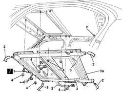

7030B10 sliding roof (assembly) - r+r with roof panel removed
- Path
- Procedures > 70 FITTINGS > 7030 SUN ROOF AND HOOD > 7030B sliding roof > 7030B10 sliding roof (assembly) - r+r with roof panel removed
- Kind
- repair procedure (removal / refitting; the operation number is the code)
- Applies to
- all engines; all production periods
- Interactive page
- https://sloeber94.github.io/elrnDB-a156/en/#/3238753
Applies to: all engines; all production periods
 Removing
Removing
 Refitting
Refitting1. Disconnect the electric connection of the sunroof
 | Name | Connector |
|---|---|---|
1 | Sun roof motor |
2. Disconnect the cables water drainage
3. Loosen the screws
4. Loosen the fixing perimetric nuts of the sliding roof frame
5. Remove the sliding roof frame (5a) and recover the brackets (5b).

Applies to: all engines; all production periods
Refitting
RemovingVerify that the components of the sunroof has no damages
Riplace the sliding roof frame and the brackets
Tighten the fixing perimetric nuts and the lateral screws
Connect the water drainage cables.
Connect the elctric connection
After the assembly of the panel make op. 7030B17 sun-roof glass - fit